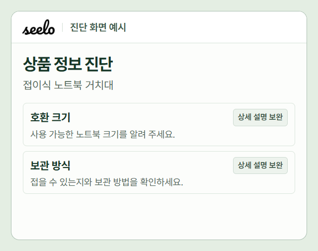
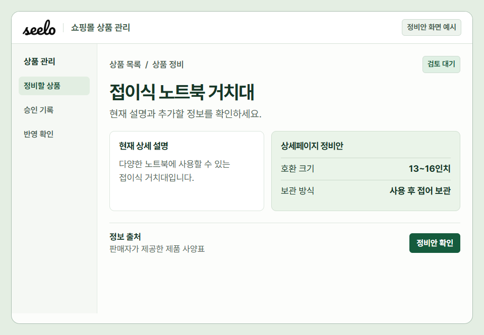
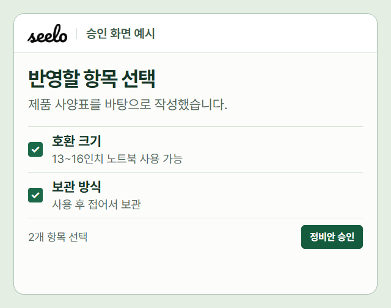
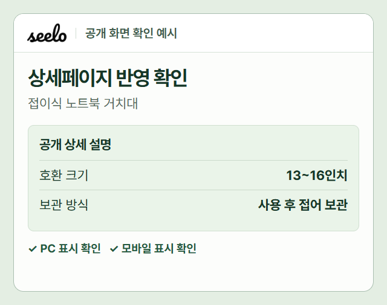

상품 정보 진단
설명이 필요한 항목과 그 근거를 확인합니다.


상품마다 빠진 정보를 확인하고 정비안을 만듭니다. 판매자가 승인하면 seelo가 상세페이지에 반영합니다.
서비스 화면 보기
정비할 항목을 찾는 순간부터 공개 페이지를 확인할 때까지, 판매자가 보는 화면 예시입니다.
설명이 필요한 항목과 그 근거를 확인합니다.

변경할 내용을 읽고 반영할 항목을 고릅니다.

승인한 문구가 공개 화면에 보이는지 확인합니다.

쇼핑몰의 상품 편집 권한을 연결한 후 정비할 상품을 고릅니다.
판매자센터에서 seelo를 대행사 매니저로 초대합니다.
상품 수정 권한을 가진 부운영자를 연결합니다.
상세페이지에 들어가는 스펙, 사용 방법, 구성처럼 구매자가 자주 확인하는 정보를 조사하고 정리합니다.
스마트스토어는 대행사 매니저로 초대합니다. 카페24는 상품 수정 권한이 있는 부운영자를 연결합니다.
반영하기 전에 판매자가 정비안을 확인합니다. seelo는 판매자가 승인한 내용을 반영하고, 공개 상세페이지에서 확인합니다.